Thumbnails are the first frame, integer scale. Each sheet has a .json beside it mapping cells (20 per row) to catalog ids. Tiers and licences: README.md.
Shortlist
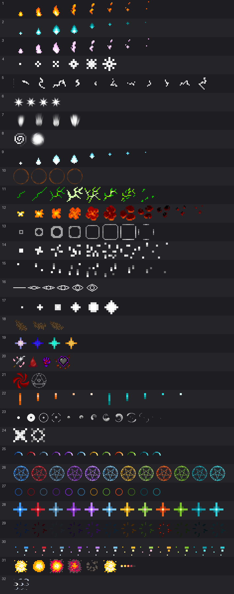
Details: shortlist.md.
Generator (fxgen.py), 12 themes
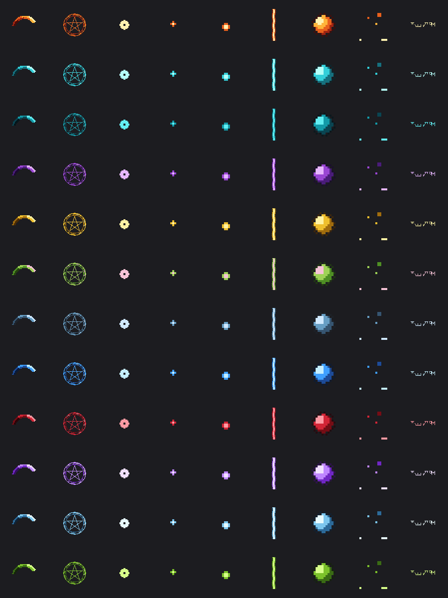
Contact sheets (235)
[EMF] Entity Model Features [Fabric & Forge] entity-model-features-1 · A · 1[ETF] Entity Texture Features - [Fabric & Forge] entity-texture-features-fabric-1 · A · 9[ISS LM]Legendary Mage (Modrinth) mr-legendary-mage-1 · A · 20Actually 3D Stuff (Modrinth) mr-actually-3d-stuff-1 · A · 66
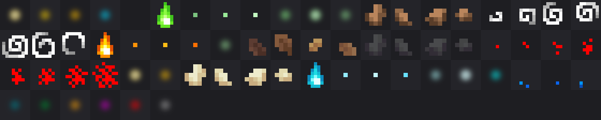
Adam's Ars Plus adams-ars-plus-1 · A · 9Advanced Loot Info (ALI) advanced-loot-info-1 · A · 1AE2 Import Export Card ae2-import-export-card-1 · A · 4Alessandrv's Enchantments (Modrinth) mr-alessandrv-enchantments-1 · A · 99
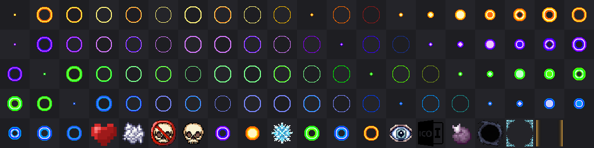
Alex's Caves alexs-caves-1 · A · 302
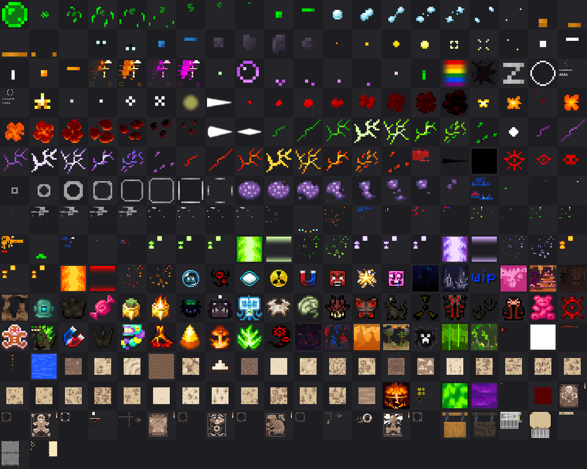
Alex's Mobs alexs-mobs-1 · A · 129
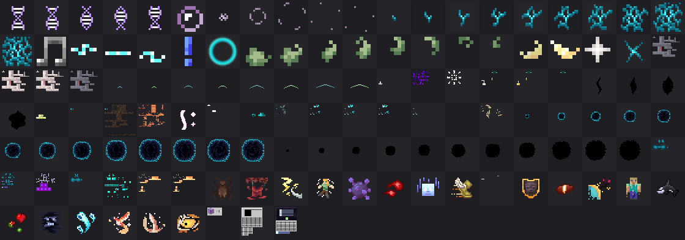
Alpha Particles - Trasparent Particles (Modrinth) mr-alpha-particles-trasparent-particles-1 · A · 8Ambient Additions (Modrinth) mr-ambientadditions-1 · A · 9Amethyst Imbuement (Modrinth) mr-amethyst-imbuement-1 · A · 284
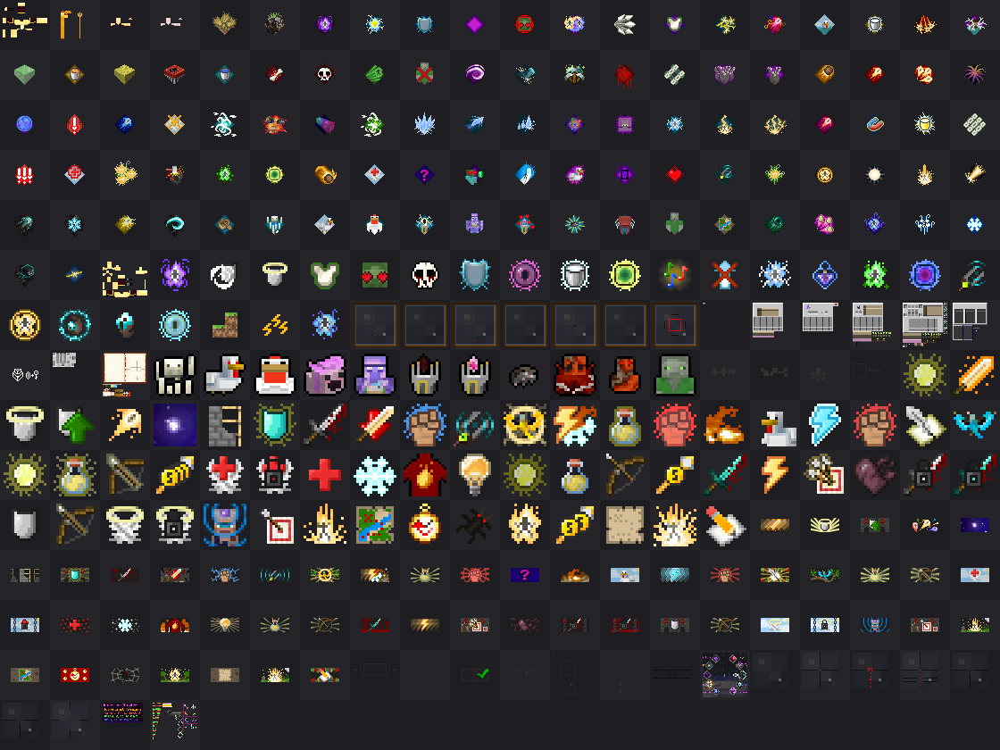
Amethyst PvP (Modrinth) mr-amethyst-pvp-1 · A · 58
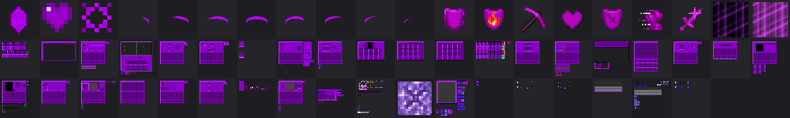
Animus animus-1 · A · 5Apothic Attributes apothic-attributes-1 · A · 10Apothic-Enchanting (Modrinth) mr-apothic-enchanting-1 · A · 114
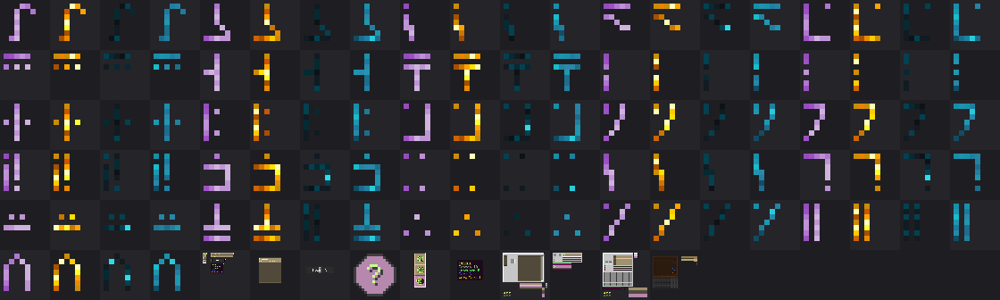
Apprentice's Codex (Modrinth) mr-apprentices-codex-1 · A · 195
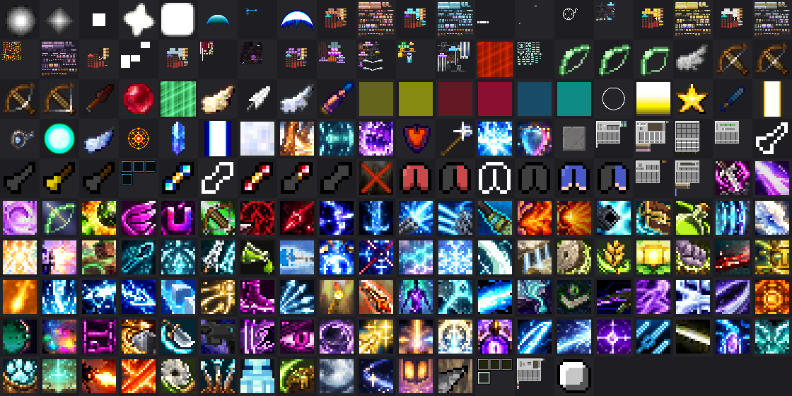
Archon (Modrinth) mr-archon-1 · A · 23
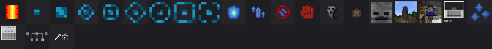
Arda's Sculks (Ancient City Portal / Deep Dark Dimension) (Modrinth) mr-ardas-sculks-1 · A · 12Ars 'n Spells ars-n-spells-1 · A · 16Ars Additions ars-additions-1 · A · 1Ars Elemental ars-elemental-1 · A · 24
Artifacts artifacts-1 · A · 5Astralrail Cube (Modrinth) mr-astralrail-cube-1 · A · 15Better GUI (Modrinth) mr-better-gui-1 · A · 337
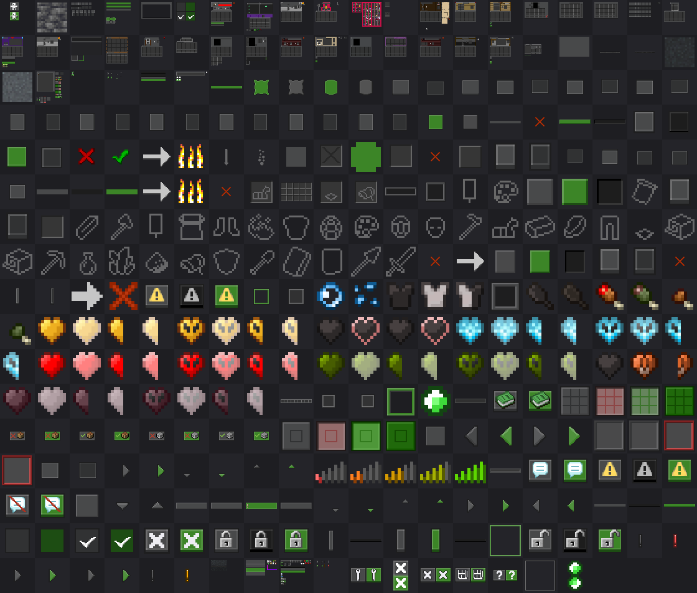
Bigger Stacks bigger-stacks-1 · A · 1Biome Particle Weather (Modrinth) mr-biome_particle_weather-1 · A · 99
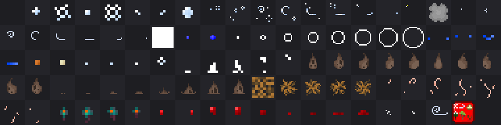
Blood Magic blood-magic-1 · A · 106
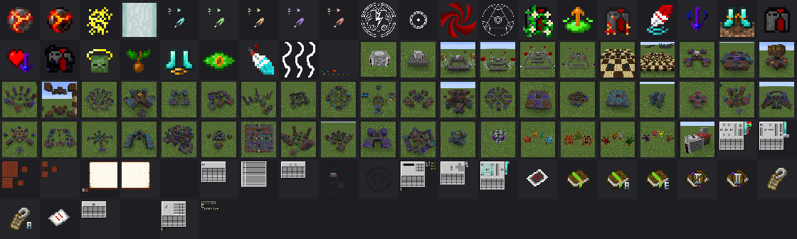
Bloxy's Structures (Modrinth) mr-bloxys-structures-1 · A · 13Bosses of Mass Destruction [Forge | NeoForge] bosses-of-mass-destruction-forge-1 · A · 119
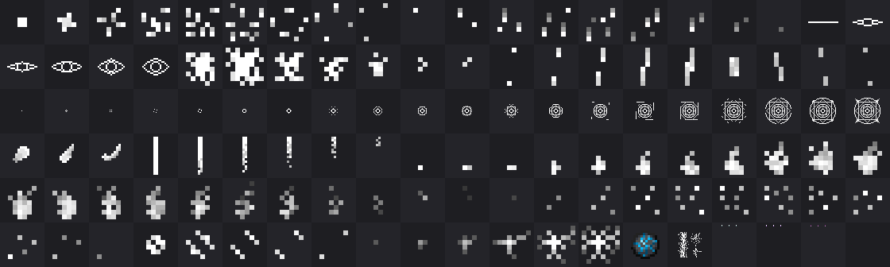
Brutality - A Terramity Addon brutality-a-terramity-addon-1 · A · 369
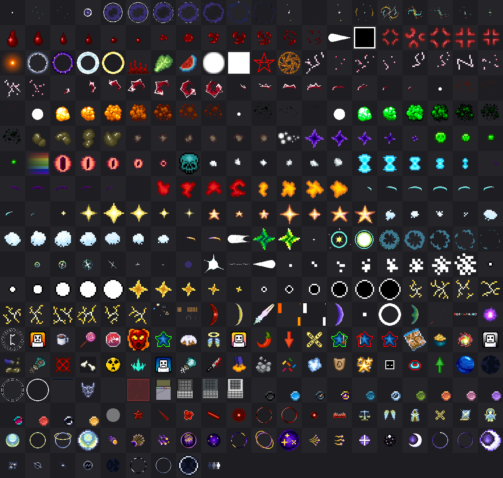
Caster Curios Bonus caster-curios-bonus-1 · A · 1Cataclysm: Spellbooks (Modrinth) mr-cataclysm-spellbooks-1 · A · 87
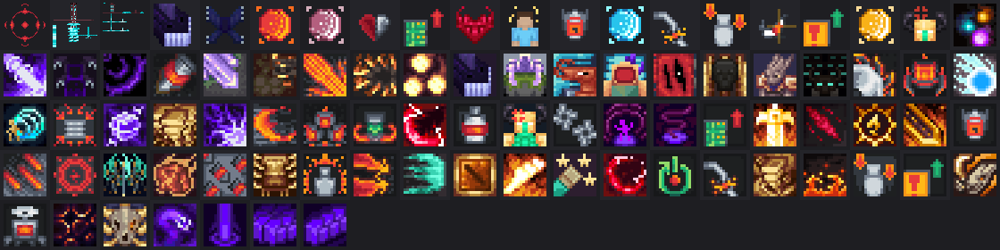
Celestial Core celestial-core-1 · A · 17Celestial Enchantments celestial-enchantments-1 · A · 4Chocolate Quest Repoured (Modrinth) mr-chocolate-quest-repoured-1 · A · 86
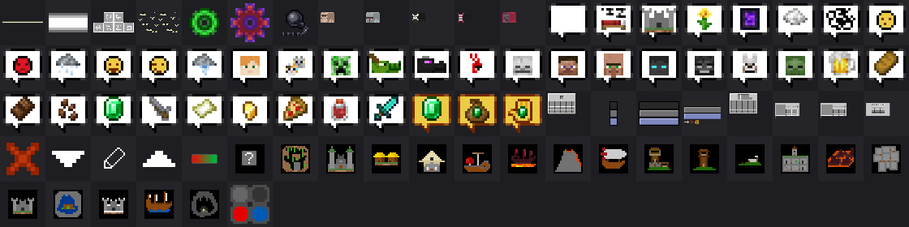
Citadel citadel-1 · A · 7CleanView (Modrinth) mr-cleanview-1 · A · 1Cloth Config API (Fabric/Forge/NeoForge) cloth-config-1 · A · 1CodeChicken Lib 1.8.+ codechicken-lib-1-8-1 · A · 21
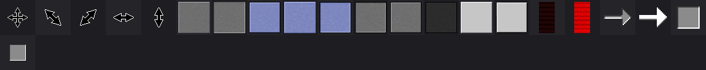
Cognition (Experience Obelisk) cognition-mod-1 · A · 8Compact Machines compact-machines-1 · A · 5Cosmetic Armor Reworked cosmetic-armor-reworked-1 · A · 1Create Crafts & Additions createaddition-1 · A · 1Create Ore Excavation create-ore-excavation-1 · A · 7Create: Central Kitchen create-central-kitchen-1 · A · 3Create: Connected create-connected-1 · A · 1Create: New Age create-new-age-1 · A · 1Creatures and Beasts: Continued creatures-and-beasts-continued-1 · A · 21
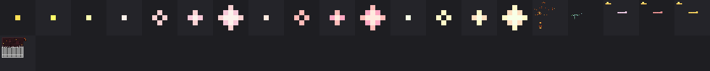
Cucumber Library cucumber-1 · A · 2Curios API curios-1 · A · 3Dimensions & Dungeons (Modrinth) mr-dimensions-dungeons-1 · A · 16Domestication Innovation domestication-innovation-1 · A · 13Druids of Storm and Spirit (Modrinth) mr-druids-of-storm-and-spirit-1 · A · 12Dungeon Now Loading 2% dungeon-now-loading-1 · A · 58
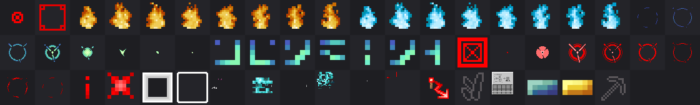
Duskfall-UI (Modrinth) mr-duskfall-ui-1 · A · 310
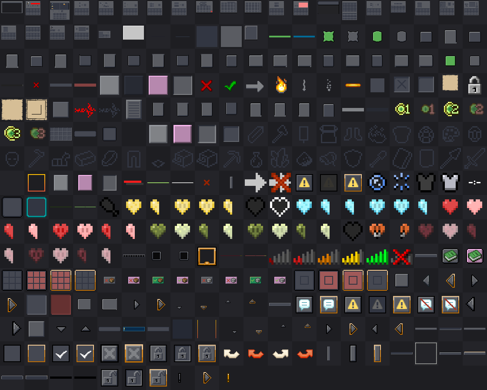
Dynamic Surroundings (Modrinth) mr-dynamicsurroundingsfabric-1 · A · 11EEEAB's Mobs eeeabs-mobs-1 · A · 129
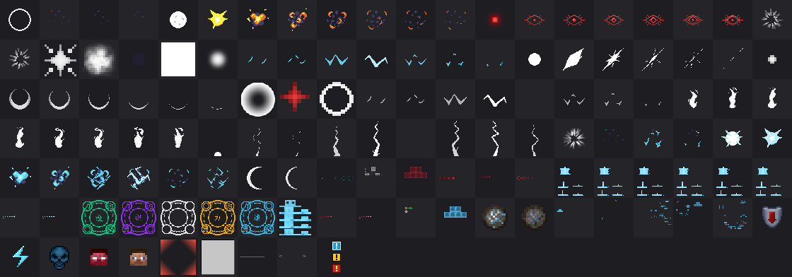
Electroblob's Wizardry Redux (Modrinth) mr-electroblobs-wizardry-redux-1 · A · 400
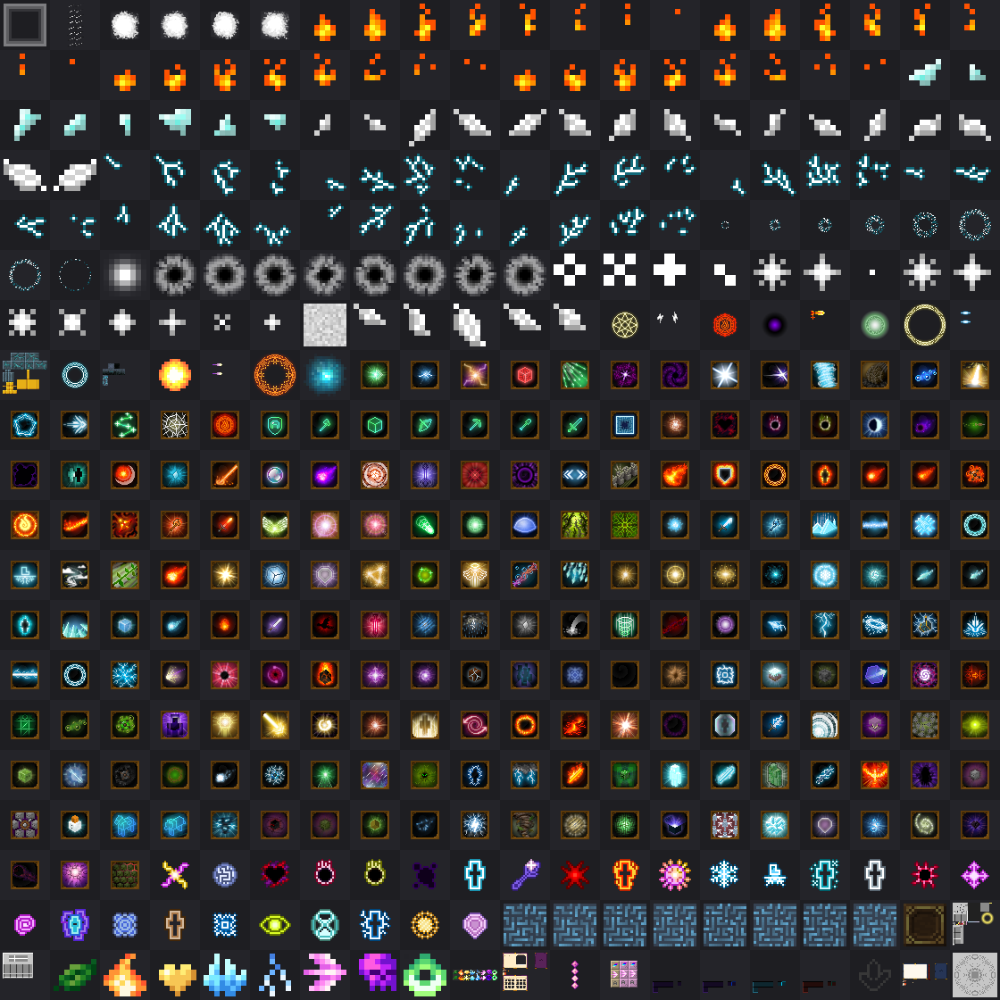
Electroblob's Wizardry Redux (Modrinth) mr-electroblobs-wizardry-redux-2 · A · 16Emerald 16x (Modrinth) mr-emerald-16x-1 · A · 59
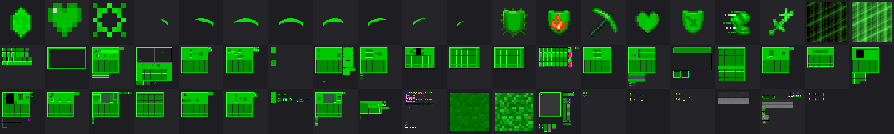
Enchantment Effects (Modrinth) mr-sb-enchantment-effects-1 · A · 29Enchantment Library at Home enchantment-library-at-home-1 · A · 1Ender IO (Modrinth) mr-enderio-1 · A · 97
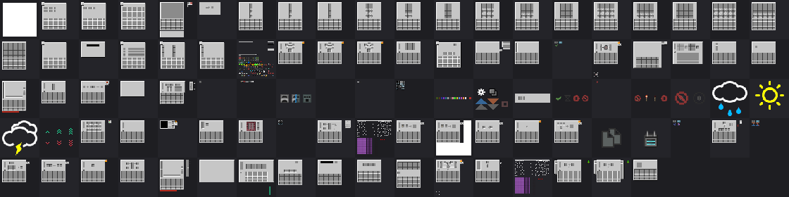
Ending Library - Linggango Variant ending-library-linggango-edition-1 · A · 7Enigmatic Dice Continued (unofficial) enigmatic-dice-continued-unofficial-1 · A · 9Evolved Mekanism evolved-mekanism-1 · A · 2ExtendedAE ex-pattern-provider-1 · A · 28
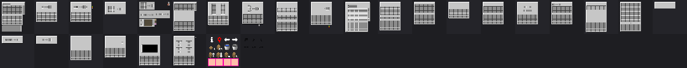
Extra Hostile Neural Networks extra-hostile-neural-networks-1 · A · 5Faithful 32x (Java 1.20.1), effect subset faithful-32x-1.20.1-1 · A · 318
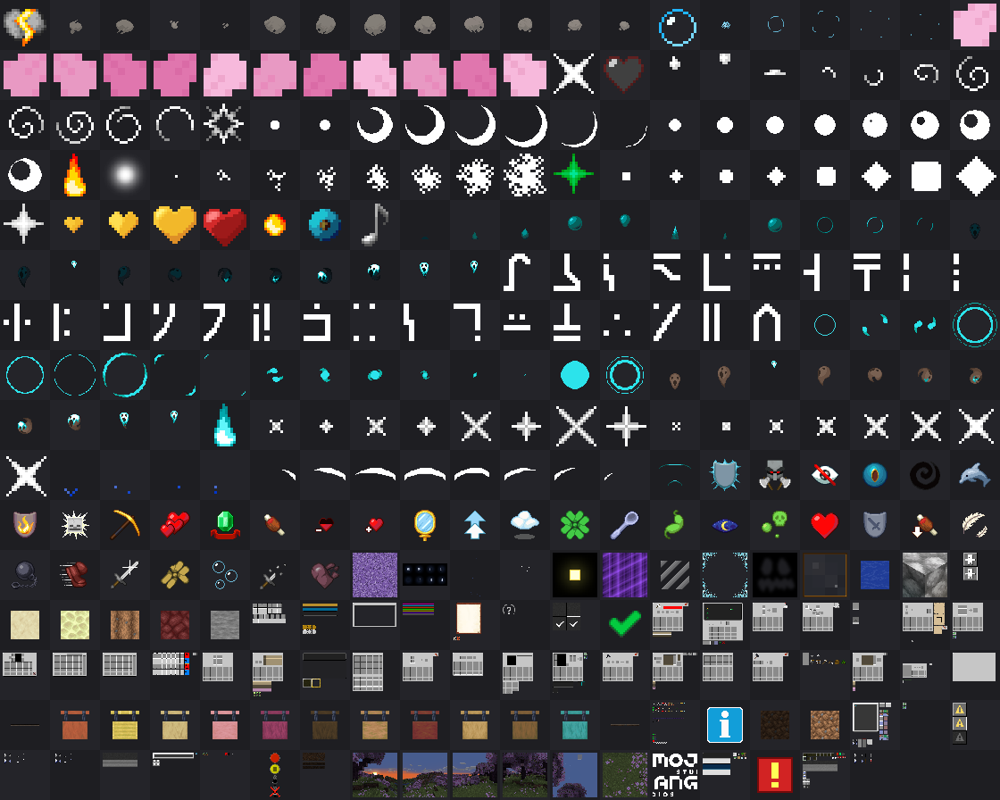
Fallen Traits & Relics fallen-traits-relics-1 · A · 1Falling Leaves (Modrinth) mr-fallingleaves-1 · A · 9Fancy Tab Sections fancy-tab-sections-1 · A · 13Farmer's Delight farmers-delight-1 · A · 38
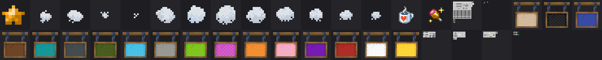
Fire Rekindled (Modrinth) mr-fire-rekindled-1 · A · 96
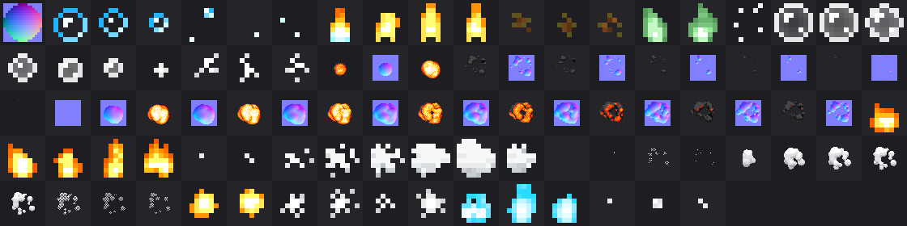
Formidulus (Modrinth) mr-formidulus-1 · A · 20Fruity GUI (Modrinth) mr-fruity-gui-1 · A · 38
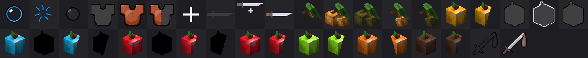
Glimmering Tales (Modrinth) mr-glimmering-tales-1 · A · 39
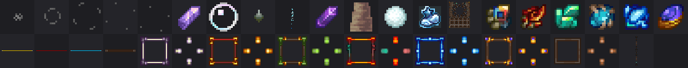
Glowing (Modrinth) mr-glowing-1 · A · 2Goety - The Dark Arts goety-1 · A · 400
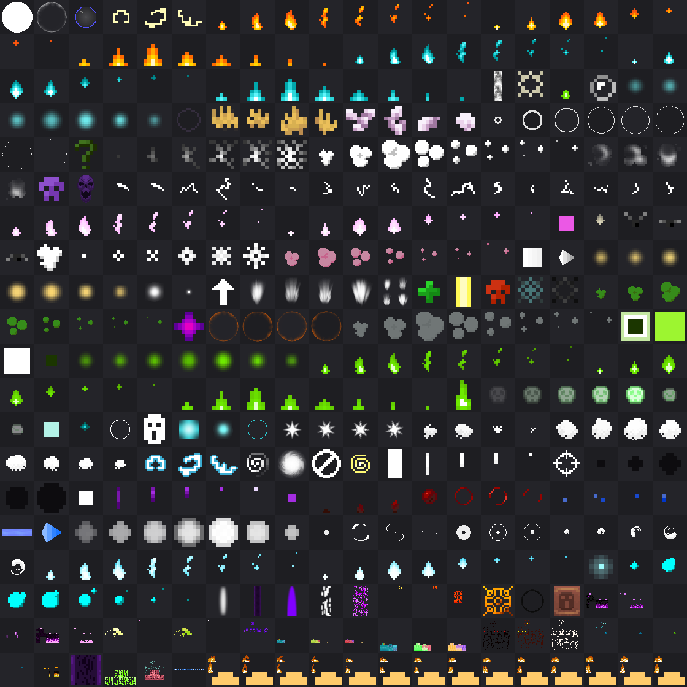
Goety - The Dark Arts goety-2 · A · 253
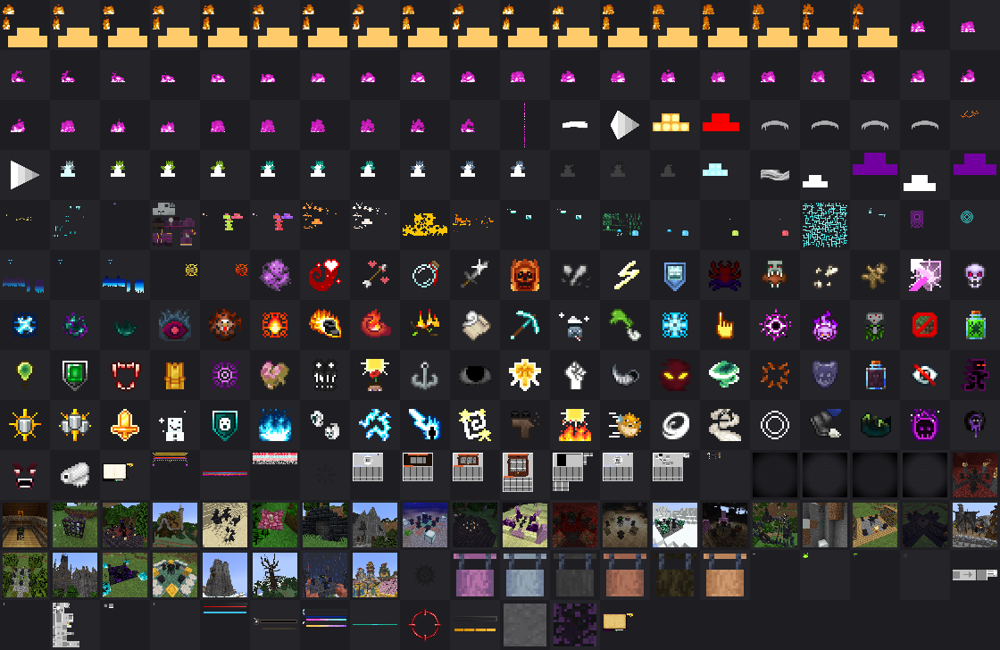
Gravel GUI (Modrinth) mr-gravelgui-1 · A · 240
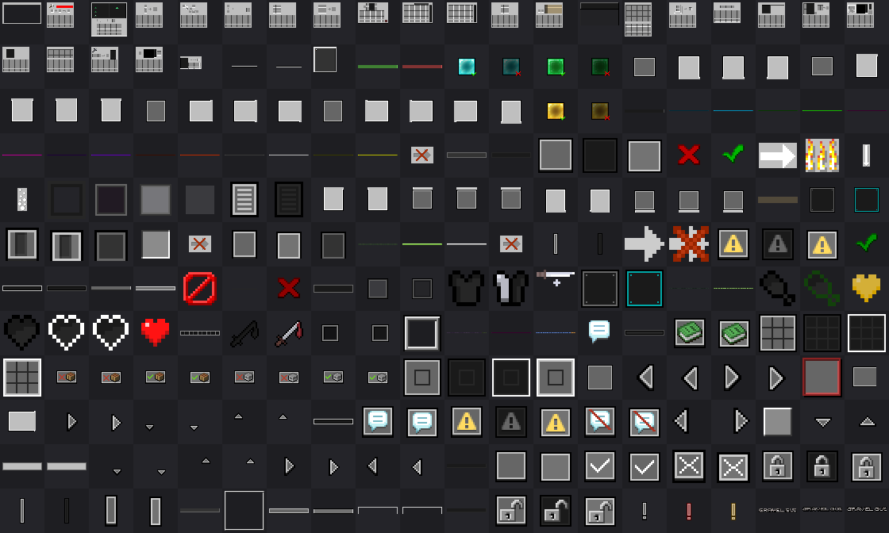
Gui Bites (Modrinth) mr-gui-bites-1 · A · 36GUI Overhaul (Modrinth) mr-gui-overhaul-1 · A · 77
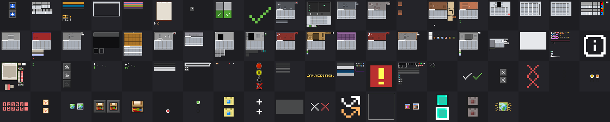
GUISe - GUI like Sodium (Modrinth) mr-gui-sodium-1 · A · 38Hbm's Nuclear Tech - Extended Edition (Modrinth) mr-ntm-extended-1 · A · 400
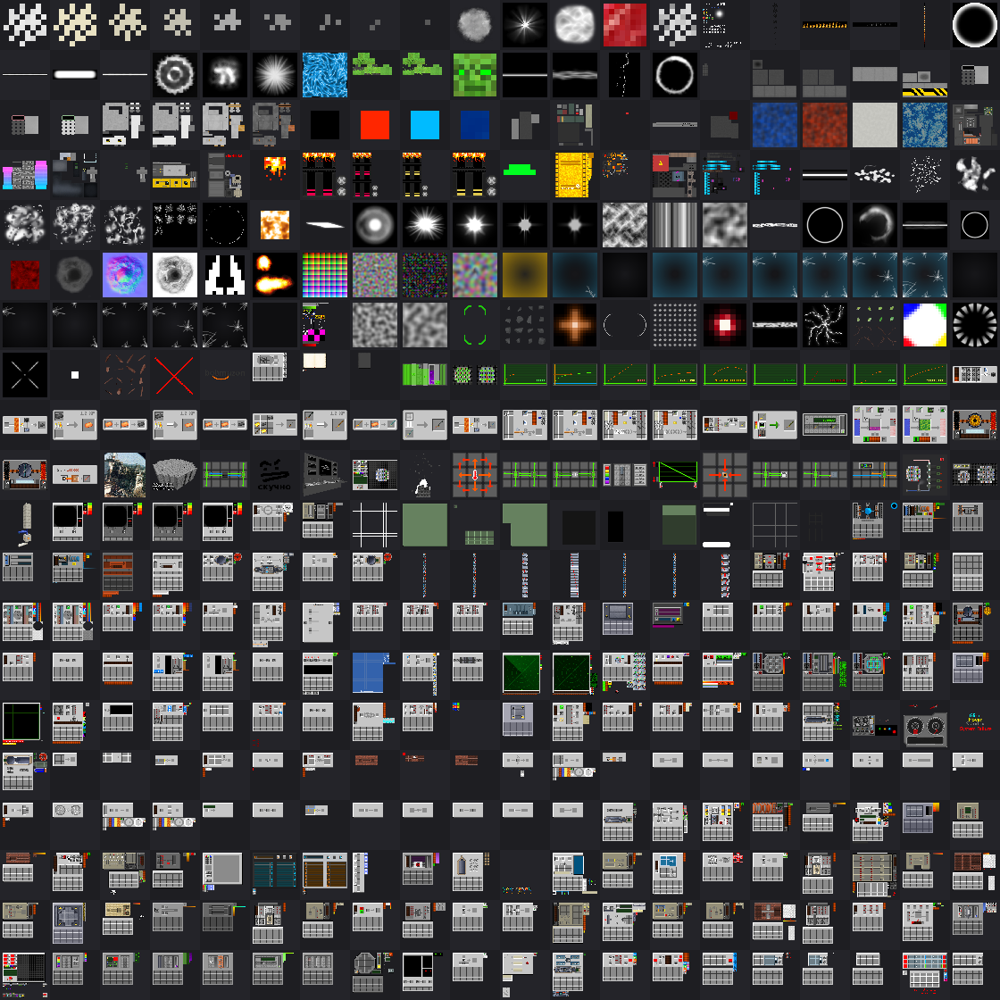
Hbm's Nuclear Tech - Extended Edition (Modrinth) mr-ntm-extended-2 · A · 19Hexerei hexerei-1 · A · 92
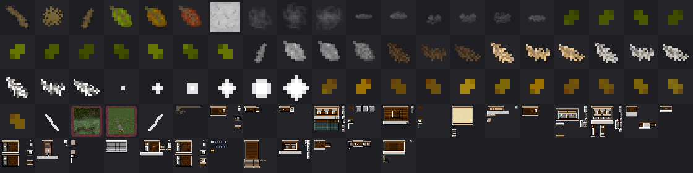
Hit Feedback (Modrinth) mr-hit-feedback-1 · A · 12Hostile Neural Networks hostile-neural-networks-1 · A · 5
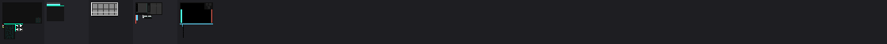
Hypr Minecraft (Modrinth) mr-hypr-minecraft-1 · A · 91
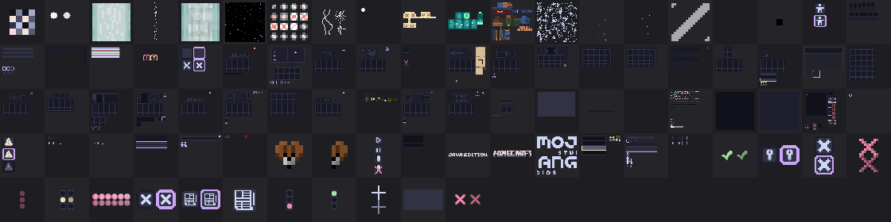
Imbued Gear (Modrinth) mr-imbued-gear-1 · A · 6Immersive Aircraft immersive-aircraft-1 · A · 5Immersive Enchanting (Modrinth) mr-immersive-enchanting-1 · A · 30
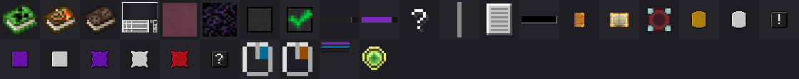
Immersive Weathering [FORGE] immersive-weathering-forge-1 · A · 55
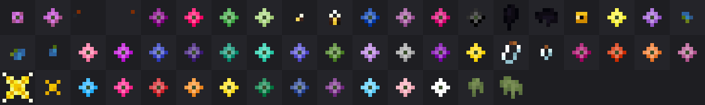
Industrial Foregoing industrial-foregoing-1 · A · 6Invocations (Modrinth) mr-invocations-1 · A · 59Item Filters item-filters-1 · A · 1JavaUI (Modrinth) mr-javaui-1 · A · 25
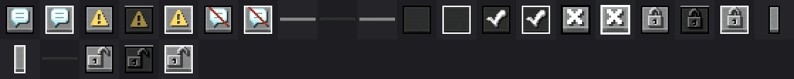
JIngHui (Modrinth) mr-jinghui-1 · A · 68
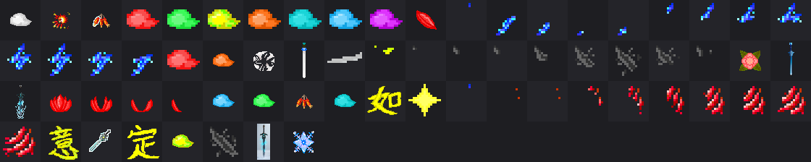
Joy of Painting joy-of-painting-1 · A · 1Just Dire Things [Forge] just-dire-things-forge-1 · A · 132
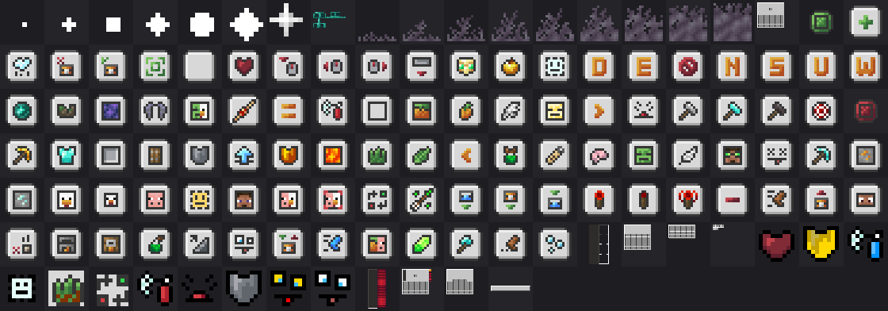
Just Enough Items (JEI) jei-1 · A · 2Kenney Particle Pack kenney-particle-pack-1 · A · 31Kenney Smoke Particles kenney-smoke-particles-1 · A · 9KonciPET UI (Modrinth) mr-koncipet-ui-1 · A · 291
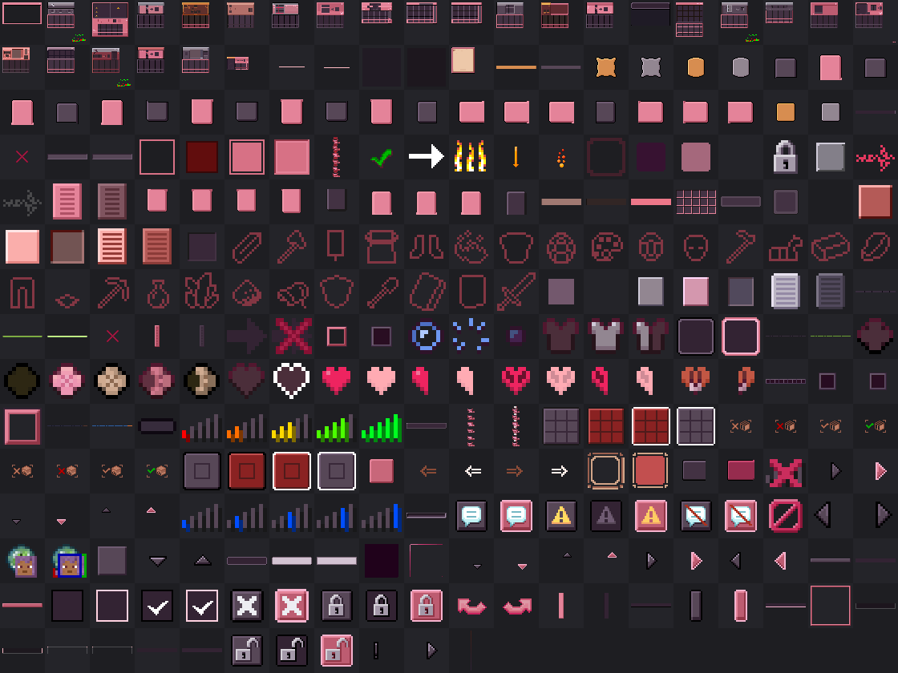
L2 Archery l2-archery-1 · A · 3Legendary Spellbooks legendary-spellbooks-1 · A · 31
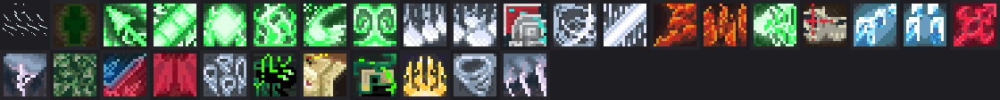
Lethality - A Terramity Addon lethality-a-terramity-addon-1 · A · 58
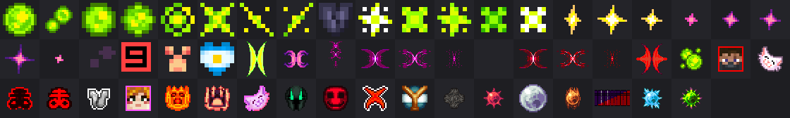
Linggango Relic Wiki effect generator (fxgen.py) lgw-fxgen-1 · A · 86Living Legend Rewamped (Modrinth) mr-living-legend-80k-rewamped-1 · A · 383Luminous: Halloween (Modrinth) mr-luminous-halloween-1 · A · 8Macabre - Call of False Prophets macabre-1 · A · 110Marium's Soulslike Weaponry mariums-soulslike-weaponry-1 · A · 56ME Requester merequester-1 · A · 4MedievalWeapons (Modrinth) mr-medievalweapons-1 · A · 2MEGA Cells mega-cells-1 · A · 2Mekanism mekanism-1 · A · 1Mekanism Generators mekanism-generators-1 · A · 1Mekanism Tools mekanism-tools-1 · A · 2Mekanism: Weapons mekanism-weapons-1 · A · 1Minecraft Bedrock resource pack (Mojang/bedrock-samples) bedrock-samples-1 · A · 400Minecraft Bedrock resource pack (Mojang/bedrock-samples) bedrock-samples-2 · A · 400Minecraft Bedrock resource pack (Mojang/bedrock-samples) bedrock-samples-3 · A · 400Minecraft Bedrock resource pack (Mojang/bedrock-samples) bedrock-samples-4 · A · 400Minecraft Bedrock resource pack (Mojang/bedrock-samples) bedrock-samples-5 · A · 16Minecraft Java 26.3 (vanilla) minecraft-26.3-1 · A · 400Minecraft Java 26.3 (vanilla) minecraft-26.3-2 · A · 400Minecraft Java 26.3 (vanilla) minecraft-26.3-3 · A · 40Modular Routers modular-routers-1 · A · 11Moog's Structure Lib (moogs_structures) moogs-structure-lib-1 · A · 2Moonlight Lib selene-1 · A · 12Mystical Agriculture mystical-agriculture-1 · A · 5Nature's Aura natures-aura-1 · A · 19NetheritePot Basics (Modrinth) mr-netheritepot-basics-1 · A · 58Not Enough Glyphs not-enough-glyphs-1 · A · 1OpenGameArt: 2D Spell Effects opengameart-cc0-16 · A · 400OpenGameArt: All the sprites from "Hold Fire" opengameart-cc0-18 · A · 400OpenGameArt: Basic Pixel Animated Spells opengameart-cc0-12 · A · 400OpenGameArt: Behrs 2,500 Pixel Staffs 32x32 Archive opengameart-cc0-13 · A · 400OpenGameArt: candy pack 1 opengameart-cc0-19 · A · 308OpenGameArt: CC0 Rune Icons opengameart-cc0-4 · A · 400OpenGameArt: CC0 Shield Icons opengameart-cc0-6 · A · 400OpenGameArt: DENZI's public domain art opengameart-cc0-7 · A · 400OpenGameArt: DENZI's public domain art opengameart-cc0-8 · A · 400OpenGameArt: DENZI's public domain art opengameart-cc0-9 · A · 400OpenGameArt: Double Slash Animation opengameart-cc0-1 · A · 400OpenGameArt: MageRage 2D Resources opengameart-cc0-15 · A · 400OpenGameArt: MageRage 2D Resources opengameart-cc0-17 · A · 400OpenGameArt: Modified And Cliped Magic, Skill & Item Icons opengameart-cc0-5 · A · 400OpenGameArt: N64 Fire opengameart-cc0-10 · A · 400OpenGameArt: N64 Fire opengameart-cc0-11 · A · 400OpenGameArt: Side Blaster GFX (M484 Games) opengameart-cc0-14 · A · 400OpenGameArt: Superpowers assets various 2d opengameart-cc0-2 · A · 400OpenGameArt: Superpowers assets various 2d opengameart-cc0-3 · A · 400OreUI Recreation (Modrinth) mr-oreui-recreation-1 · A · 36Particle Interactions (Modrinth) mr-particle-interactions-1 · A · 141Particle Rain (Modrinth) mr-particle-rain-1 · A · 5Particular ✨ (Modrinth) mr-particular-1 · A · 173Peyro's Scythes & Spells peyros-scythe-1 · A · 49Polymorph polymorph-1 · A · 1Postmortal Particles (Modrinth) mr-postmortal-particles-1 · A · 25Primitive Mobs Revived primitive-mobs-revived-1 · A · 7Projectile Damage Attribute [Fabric & Forge] projectile-damage-attribute-1 · A · 1purple CPVP Pack 16x (Modrinth) mr-purple-cpvp-pack-16x-1 · A · 72Purple GUI (Modrinth) mr-purple-gui-1 · A · 52PvP particles (Modrinth) mr-pvp-particles-1 · A · 1red cpvp 16x (Modrinth) mr-red-cpvp-16x-1 · A · 41Reduced Particles (Modrinth) mr-reduced-particles-1 · A · 23Remastered UI (Modrinth) mr-refreshed-ui-1 · A · 46Remnants | The Eclipsed Realm (Modrinth) mr-remnants-eclipsed-realm-1 · A · 47Roughly Enough Items (REI) (Modrinth) mr-rei-1 · A · 40RPG Style More Weapons (Modrinth) mr-rpg_style_more_weapons-1 · A · 8Runic Enchanting (Modrinth) mr-runic-enchanting-1 · A · 3Sanguine Neural Networks [Hostile Neural Networks Addon] sanguine-neural-networks-1 · A · 2Sapphire 16x (Modrinth) mr-zapphire-16x-1 · A · 59Scorched Guns 2 (Modrinth) mr-scorched-guns-2-1 · A · 151Shiny Hearts (Modrinth) mr-shiny-hearts-1 · A · 58Shoulder Surfing Reloaded shoulder-surfing-reloaded-1 · A · 3Sky Lands (Modrinth) mr-sky-lands-1 · A · 69Slashh slashh-1 · A · 12Sleek UI (Modrinth) mr-sleek-ui-1 · A · 46Smooth Particles (Modrinth) mr-smooth-particles-1 · A · 243Smooth SMP pack (Modrinth) mr-smooth-smp-pack-1 · A · 62SnackPirate's Aeromancy Additions (Modrinth) mr-aeromancy-additions-1 · A · 17Spellblades and Such (Modrinth) mr-spellblades-and-such-1 · A · 69Spice of Life: Carrot Edition spice-of-life-carrot-edition-1 · A · 1Stalwart Dungeons (Modrinth) mr-stalwart-dungeons-1 · A · 12STONEBORN - Modded Compatibility GUI - SBMC (Modrinth) mr-stoneborn-modded-compatibility-gui-1 · A · 30The Aurorian (Modrinth) mr-the-aurorian-1 · A · 5The Graveyard (Fabric/Neoforge) (Modrinth) mr-the-graveyard-fabric-1 · A · 73The Immersive Music Mod the-immersive-music-mod-1 · A · 1Tidal (Modrinth) mr-tidal-waves-1 · A · 60Titanium titanium-1 · A · 3Tom's Simple Storage Mod toms-storage-1 · A · 6Tome of Blood: Rebirth tome-of-blood-rebirth-1 · A · 8Tooltip Overhaul tooltip-overhaul-1 · A · 13Toxony (Modrinth) mr-toxony-1 · A · 141Transmog transmog-1 · A · 1Transparent GUI (Modrinth) mr-transparent-inventory-gui-1 · A · 172Transparent UI + Mod Support (Modrinth) mr-transparent-ui-1 · A · 88Trickster (Modrinth) mr-trickster-1 · A · 52UsefulMagic (Modrinth) mr-usefulmagic-1 · A · 30Valoria (Modrinth) mr-valoria-1 · A · 162Visuality (Modrinth) mr-visuality-1 · A · 45Wandrous (Modrinth) mr-wandrous-1 · A · 24War Wither (Modrinth) mr-war-wither-1 · A · 11wd's Selling Bin wds-selling-bin-1 · A · 3Windy (Modrinth) mr-windy-1 · A · 50World Alive: Ambient birds and wildlife (Modrinth) mr-world-alive-1 · A · 140World Setup world-setup-1 · A · 1XingLuo AE2 1.21 GUIExpansion (Modrinth) mr-xingluo-ae2-1.21-guiexpansion-1 · A · 335YetAnotherConfigLib yacl-1 · A · 3Zenith Renewed (Modrinth) mr-zenith-renewed-1 · A · 125雫拔刀剑 (Modrinth) mr-nekohashizuku-blade-1 · A · 7Aerial Hell (Modrinth) mr-aerial-hell-1 · A-SA · 159Applied Energistics 2 applied-energistics-2-1 · A-SA · 42Applied Interfaces | AE2 GUI (Modrinth) mr-applied-interfaces-1 · A-SA · 241BetterNether (Modrinth) mr-betternether-1 · A-SA · 10Deeper and Darker deeperdarker-1 · A-SA · 6Enchanting Table Magic Circle (Modrinth) mr-enchanting-table-magic-circle-1 · A-SA · 22GUI Revision (Modrinth) mr-gui-revision-1 · A-SA · 44Immersive Weapons (Modrinth) mr-immersive-weapons-1 · A-SA · 33Only Glass GUI (Modrinth) mr-only-glass-gui-1 · A-SA · 50Patchouli patchouli-1 · A-SA · 10Pixel Cat's End GUI (Modrinth) mr-pixelcatsend-gui-1 · A-SA · 96Pride GUI (Modrinth) mr-pridegui-1 · A-SA · 253Project: Vibrant Journeys project-vibrant-journeys-1 · A-SA · 1Quark quark-1 · A-SA · 30Transparent Inventorys (GUI & HUD) (Modrinth) mr-transparent-inventorys-1 · A-SA · 31Vanilla Evolved (Modrinth) mr-vanilla-evolved-1 · A-SA · 111Linggango - FTB Quests Theme linggango-ftb-quests-theme-1 · A-perm · 7Linggango Textures linggangotextures-1 · A-perm · 3